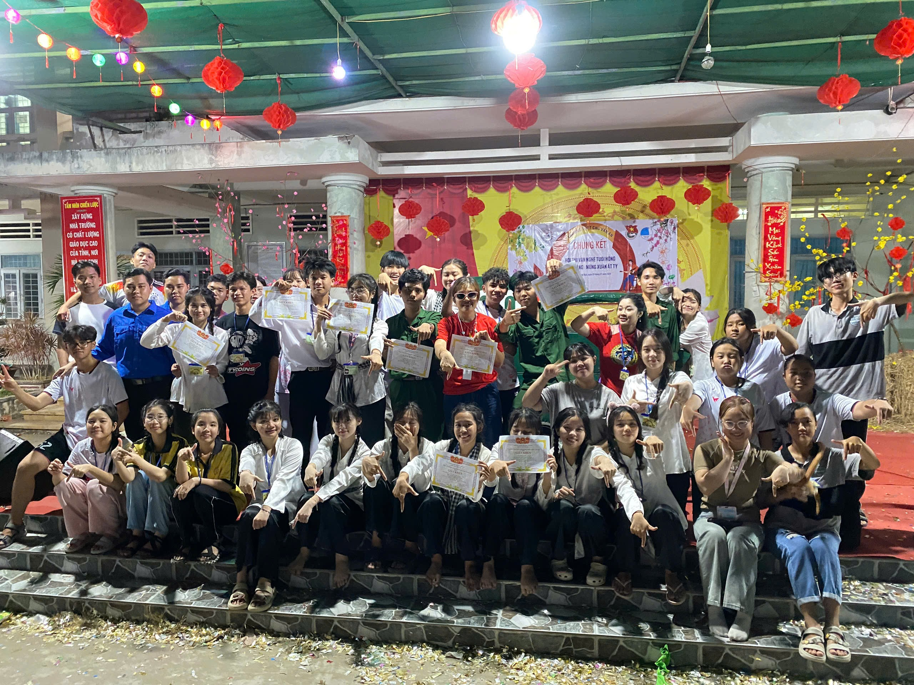

Chào mừng đến với Lớp Học 12A7 2022-2025
Trang Chủ🏘️
Thành Viên🫂
Hoạt Động🤟🏻
Thư Viện Ảnh📸
Liên Hệ☎️
Khẩu hiệu lớp học: "A7 KHÔNG BAO GIỜ GÃY"

Chào mừng thầy soái ca đến với vùng đất tâm hồn của 12A7💒